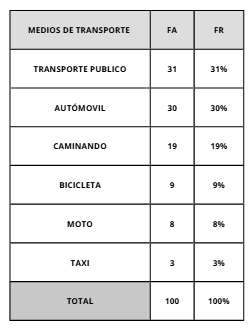
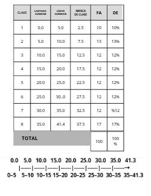

PROBABILIDAD Y ESTADISTICA
CUALITATIVAS
En esta investigación se encuestó a 100 personas para conocer el medio de transporte que utilizan con mayor frecuencia para trasladarse a su escuela o trabajo.
DATOS
- Transporte público, Automóvil propio, Transporte público, Automóvil propio, A pie, Bicicleta, Transporte público, Moto, Automóvil propio, Transporte público
- A pie, Automóvil propio, Transporte público, Moto, Transporte público, A pie, Automóvil propio, Transporte público, Bicicleta, Transporte público
- Transporte público, Automóvil propio, A pie, Transporte público, Moto, Automóvil propio, Transporte público, A pie, Transporte público, Bicicleta
- Automóvil propio, Transporte público, Bicicleta, Automóvil propio, Transporte público, A pie, Moto, Transporte público, Automóvil propio, Transporte público
- Transporte público, A pie, Automóvil propio, Transporte público, Bicicleta, Transporte público, Automóvil propio, Transporte público, Moto, A pie
- Automóvil propio, Transporte público, A pie, Moto, Transporte público, Automóvil propio, Transporte público, Bicicleta, Transporte público, Automóvil propio
- Transporte público, Bicicleta, Automóvil propio, Transporte público, A pie, Transporte público, Moto, Automóvil propio, Transporte público, A pie
- A pie, Transporte público, Automóvil propio, Transporte público, Bicicleta, Automóvil propio, Transporte público, A pie, Moto, Transporte público
- Transporte público, Automóvil propio, A pie, Transporte público, Moto, Bicicleta, Transporte público, Automóvil propio, Transporte público, A pie
- Automóvil propio, Transporte público, Bicicleta, A pie, Transporte público, Automóvil propio, Transporte público, Moto, Transporte público, Automóvil propio
DATOS ORDENADOS
- Transporte público (autobús/metro) = 31
- Automóvil propio = 30
- A pie = 19
- Bicicleta = 9
- Moto = 8
- Taxi = 3
TABLA DE FRECUANCIA

CONCLUCIONES
De las 100 personas encuestadas,El transporte público 31 % y el automóvil propio 30 %son los más utilizados, representando juntos el 61 % de las respuestas. El transporte activo a pie 19 % mas bicicleta 9 % suma 28 %. Moto 8 % y taxi 3 % son minoritarios.
CUANTITATIVA DISCRETA
En este estudio se registró la cantidad de mascotas que tienen 100 familias.
DATOS
- 2, 1, 3, 0, 2, 4, 1, 2, 3, 1,
- 0, 2, 1, 3, 4, 2, 1, 0, 2, 3,
- 1, 2, 4, 0, 3, 1, 2, 1, 0, 2,
- 3, 4, 1, 2, 0, 3, 1, 2, 4, 0,
- 1, 2, 3, 1, 0, 2, 4, 1, 3, 2,
- 0, 1, 2, 3, 4, 2, 1, 0, 3, 2,
- 1, 4, 0, 2, 3, 1, 2, 0, 4, 3,
- 1, 2, 0, 3, 4, 1, 2, 0, 3, 1,
- 2, 4, 0, 1, 3, 2, 1, 0, 4, 3,
- 2, 1, 3, 0, 4, 2, 1, 0, 3, 2,
DATOS ORDENADOS
- 0, 0, 0, 0, 0, 0, 0, 0, 0, 0,
- 0, 0, 0, 0, 0, 0, 1, 1, 1, 1,
- 1, 1, 1, 1, 1, 1, 1, 1, 1, 1,
- 1, 1, 1, 1, 1, 1, 1, 2, 2, 2,
- 2, 2, 2, 2, 2, 2, 2, 2, 2, 2,
- 2, 2, 2, 2, 2, 2, 2, 2, 2, 2,
- 3, 3, 3, 3, 3, 3, 3, 3, 3, 3,
- 3, 3, 3, 3, 3, 3, 3, 3, 3, 4,
- 4, 4, 4, 4, 4, 4, 4, 4, 4, 4,
- 4, 4, 4, 4, 4, 4, 4, 4, 4, 4,
TABLA DE FRECUANCIA
CONCLUCIONES
De las 100 familias encuestadas,la moda es 2 mascotas. La mayoría de las familias tiene 0 o 1 mascota aprox 40-45 %. La distribución es asimétrica positiva: valores altos 3 o más son poco frecuentes. En general, las familias mantienen un número bajo o moderado de mascotas.
CUANTITATIVA CONTINUA
En la siguiente lista se midió el tiempo (en minutos) que tardan 100 estudiantes en llegar desde su casa hasta la escuela.
DATOS
- 2.1, 3.0, 2.4, 1.2, 3.1, 0.2, 1.3, 4.3, 2.1, 0.2
- 1.3, 4.3, 4.2, 1.1, 0.0, 2.3, 1.2, 4.0, 3.3, 1.2
- 1.2, 4.0, 3.3, 1.2, 1.0, 2.3, 3.4, 1.2, 0.3, 1.1
- 0.1, 2.3, 1.0, 2.4, 1.0, 3.3, 2.0, 4.0, 0.0, 0.0
- 1.2, 3.1, 0.2, 4.1, 1.3, 2.0, 4.1, 3.2, 1.1, 4.0
- 0.3, 2.1, 0.4, 3.3, 2.1, 0.4, 3.3, 1.2, 0.0, 3.1
- 1.2, 0.1, 0.3, 4.4, 1.2, 0.0, 3.3, 2.1, 0.4, 3.3
- 2.4, 0.1, 3.2, 1.0, 4.3, 3.1, 2.0, 1.0, 4.3, 3.3
- 2.1, 3.0, 0.4, 2.1, 0.0, 3.2, 1.0, 0.3, 2.2, 1.0
- 2.1, 3.0, 4.2, 1.0, 0.3, 2.2, 1.0, 0.3, 2.2, 2.1
DATOS ORDENADOS
- 0.0, 0.0, 0.0, 0.0, 0.0, 0.0, 0.1, 0.1, 0.1, 0.2
- 0.2, 0.2, 0.3, 0.3, 0.3, 0.3, 0.3, 0.3, 0.4, 0.4
- 0.4, 0.4, 1.0, 1.0, 1.0, 1.0, 1.0, 1.0, 1.0, 1.0
- 1.0, 1.1, 1.1, 1.1, 1.2, 1.2, 1.2, 1.2, 1.2, 1.2
- 1.2, 1.2, 1.2, 1.2, 1.3, 1.3, 1.3, 2.0, 2.0, 2.0
- 2.1, 2.1, 2.1, 2.1, 2.1, 2.1, 2.1, 2.1, 2.1, 2.2
- 2.2, 2.2, 2.3, 2.3, 2.3, 2.4, 2.4, 2.4, 3.0, 3.0
- 3.0, 3.1, 3.1, 3.1, 3.1, 3.2, 3.2, 3.2, 3.3, 3.3
- 3.3, 3.3, 3.3, 3.3, 3.3, 3.3, 3.4, 4.0, 4.0, 4.0
- 4.0, 4.1, 4.1, 4.2, 4.2, 4.3, 4.3, 4.3, 4.3, 4.4
TABLA DE FRECUANCIA

CONCLUCIONES
Los tiempos de traslado desde casa a la escuela de los 100 estudiantes,La mayoría concentra tiempos bajos 0-2 min y moderados 3-4 min. Los tiempos promedio son relativamente cortos, aunque un subgrupo enfrenta trayectos más largos que podrían afectar la puntualidad.